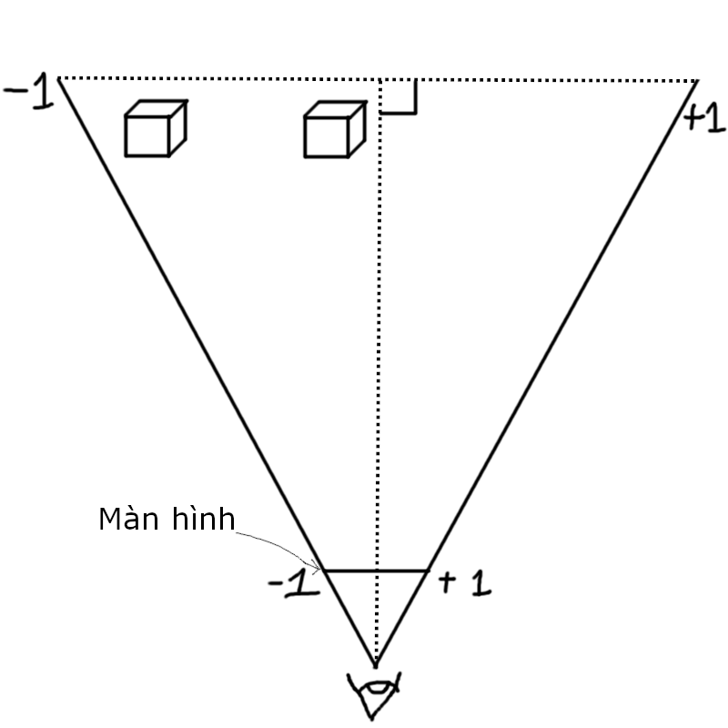
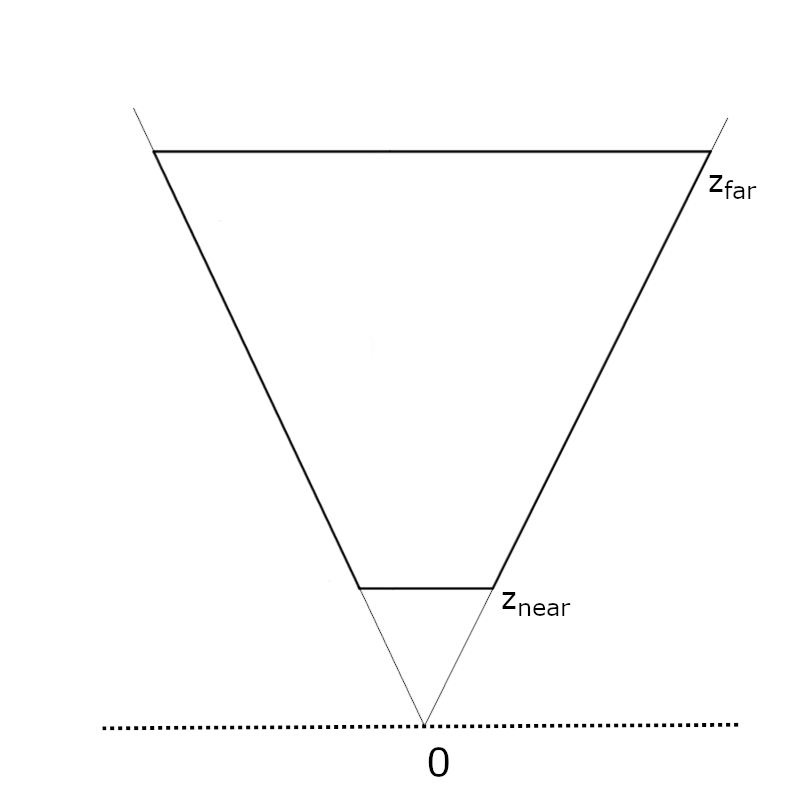

Projection matrix
Trong blog trước, ta đã vẽ được một cube lên canvas rồi. Tuy nhiên ta còn những vấn đề sau đây cần giải quyết:- Làm gì nếu mình muốn chỉnh tầm nhìn (FOV) của mình?
- Chuyện gì xảy ra khi cube quá gần màn hình?


Mình để -1 và +1 ở chỗ màn hình và chỗ đáy frustum kia để bạn nhớ rằng khoảng mình nhìn được đang scale từ từ lên từ
màn hình đến đáy frustum, và cũng để bạn nhớ vể giá trị chuẩn của màn hình.
Đặt FOV là theta (\(θ\)) (hình 2), chia tam giác tầm nhìn thành 2 tam giác vuông, thấy rằng FOV càng lớn thì cạnh đối (\(opposite\)) càng lớn, và tọa độ màn hình (\(P\)) của các vật càng gần tâm màn hình hơn, mà như ta biết thì tâm màn hình chính là (0, 0), tức là tọa độ màn hình của vật sẽ càng nhỏ khi FOV càng lớn, suy ra tọa độ vật sẽ tỉ lệ nghịch với FOV và tỉ lệ nghịch với cạnh đối: \(P \backsim \frac{1}{opposite}\). Đối với cạnh kề (\(adjacent\)) của 2 hình trên, đó chính là khoảng cách từ mắt đến khoảng xa nhất mà ta có thể nhìn thấy được, có thể là bất kỳ hằng số nào, vì là hằng số nên ta cũng có thể suy ra rằng: \(P \backsim \frac{adjacent}{opposite}\). Và như ta biết, \(tan\) bằng đối chia kề, tức là: \(P \backsim \frac{1}{tan(\frac{θ}{2})}\).
Nếu bạn để ý, \(θ\) là góc ở hình thứ 2 chứ không phải hình thứ 1, vì ta đang sử dụng vertical FOV, và hầu hết game nào cũng sử dụng vertical FOV, lí do giống với việc ta nhân aspect ratio ở x thay vì ở y, điều này không hề được nhắc tới trong video của javidx9 btw.
Vì \(P \backsim \frac{1}{tan(\frac{θ}{2})}\), ta sẽ nhân x, y với \(\frac{1}{tan(\frac{θ}{2})}\):
const fov = 90;
let fovMultiplier = 1.0 / Math.tan(fov * 0.5 / 180.0 * Math.PI); //hàm Math.tan nhận radian, phải chuyển độ thành radian
...
vertices[i] = new Vector3(
v.x * fovMultiplier * canvas.height + canvas.width / 2,
-v.y * fovMultiplier * canvas.height + canvas.height / 2,
1);Về vấn đề thứ hai, khi cube quá gần màn hình, thì những tam giác của nó sẽ được vẽ rất là to, vượt cả ra ngoài màn hình, gây lag máy (nếu như mình đang cố tô màu cube, sẽ làm sau). Để giải quyết vấn đề trên, ta sẽ đặt giá trị z nhỏ nhất mà vẫn được vẽ là \(z_{near}\), gọi mặt phẳng tập hợp những điểm có giá trị z nhỏ nhất đó là near plane (mặt phẳng này vuông góc với hướng nhìn camera), đồng nghĩa những gì nằm giữa camera và mặt phẳng đó sẽ không được vẽ , ngoài ra ta đặt thêm một far plane (\(z_{far}\)) ở đằng xa để không vẽ luôn những vật ở quá xa (nhỏ) để thấy.
Theo lý thuyết, những thứ đằng sau camera (có z âm) sẽ không thấy được, bây giờ, nó phải là "những thứ đằng sau near plane sẽ không thấy được". Tuy nhiên, ta không nên if \(z < z_{near}\) thì không hiển thị, kiểu chấp vá này sẽ khó tính toán về sau, mà ta nên định nghĩa một \(z'\) mới theo kiểu nó sẽ bằng 0 khi ở near plane, nhưng far plane vẫn giữ nguyên.

Trong hình bạn đang thấy frustum mới \([z_{near}; z_{far}]\) mà ta muốn hiển thị, ta phải giãn và lùi frustum mới này
để hiển thị cho đúng rule "z âm thì không hiển thị, far plane giữ nguyên".
Trước tiên ta sẽ lấy \(z - z_{near}\) để lùi frustum về 0, sau đó chia \((z_{far} - z_{near})\) và
nhân \(z_{far}\) để nó giãn ra như trên đã nói, bây giờ công thức thành:
$$
z' = (z-z_{near})*\frac{z_{far}}{z_{far}-z_{near}} = z\frac{z_{far}}{z_{far}-z_{near}} - z_{near}\frac{z_{far}}{z_{far}-z_{near}}
$$
Cái người ta thường làm là lấy tất cả chia cho z ban đầu. Vì sao? Đó là do ta muốn nó có tính chất "càng gần 0 càng thay đổi nhiều",
đó là vì \(z'\) là một hàm theo biến \(z\) có dạng là
\(f(z) = a + bz\) với \(a = - z_{near}\frac{z_{far}}{z_{far}-z_{near}}\) và \(b = \frac{z_{far}}{z_{far}-z_{near}}\),
chia cho \(z\) sẽ biến nó thành dạng \(f(z) = a + b\frac{1}{z}\), là một hàm
Hyperbol. Bạn có thể xem rõ hơn khi tính nó ở excel hoặc vẽ đồ thị ra,
dưới đây là 2 hình so sánh 3 giá trị: \((z-z_{near})*\frac{z_{far}}{z_{far}-z_{near}}\), sau khi nhân \(z_{far}\) và sau khi chia \(z\):


Tính chất "càng gần 0 càng thay đổi nhiều" sẽ giúp cho những vật gần camera sẽ hiển thị chính xác và tách biệt rõ ràng hơn khi z của chúng gần nhau (z-fighting). Một lí do khác để chia z là vì x, y trước đó cũng chia cho z, việc chia phần z cho z luôn sẽ giúp đơn giản hóa vấn đề (nhất là lúc dùng ma trận).
Tuy nhiên, bạn để ý là nãy giờ mình chỉ thay đổi z chứ không làm gì liên quan tới x và y, cho nên khi thêm code liên quan tới \(z_{far}\), \(z_{near}\) vào thì cũng chả thay đổi gì. Đó là vì \(z_{normalized}\) mà mình vừa tính ra dùng cho các bước tính liên quan tới độ sâu trước khi thực hiện các phép tính liên quan tới màn hình, mình sẽ nói về nó sau.
Bây giờ, mình sẽ lùi lại một tí và quay về tiêu đề của blog này, Projection Matrix là gì? Trước hết, Projection chính là một phép biến đổi mà ta làm từ blog trước tới giờ, chuyển các tọa độ trong không gian 3D thành tọa độ màn hình 2D. Nhưng trước Projection thì ta có phép biến đối View, là chuyển đổi thế giới theo góc nhìn và vị trí của camera (từ blog trước tới giờ ta luôn mặc định camera ở (0, 0, 0)). Và trước View ta có có phép biến đổi Model, là thay đổi vị trí, độ xoay và kích thước của các vật trong không gian 3D. Ba phép biến đổi này đều có thể chuyển thành ma trận và nhân (gộp) nhau thành một ma trận duy nhất, gọi là Model View Projection Matrix, như vậy sẽ giảm phép tính phải tính đối với mọi đỉnh trong không gian 3D. Và ngoài ra việc sử dụng ma trận như vậy cũng thích hợp cho GPU, vì GPU giỏi tính song song nhiều phép toán đơn giản cùng lúc, cho nên ma trận hay được sử dụng trong đồ họa máy tính.
Nếu ngành bạn học hồi Đại học không dạy Đại số tuyến tính, hay bạn chưa từng học Đại học, thì chắc bạn sẽ không biết ma trận là gì. Ma trận đơn giản chỉ là một bảng các số, nhưng cái mình cần biết duy nhất là phép nhân ma trận. Ví dụ ta có 2 ma trận \(A\) và \(B\): $$ A = \begin{pmatrix} a_{11} & a_{12} & a_{13} \\ a_{21} & a_{22} & a_{23} \end{pmatrix}; B = \begin{pmatrix} b_{11} & b_{12} \\ b_{21} & b_{22} \\ b_{31} & b_{32} \end{pmatrix} $$ Thì phép nhân \(AB\) sẽ ra một ma trận mới: $$ AB = \begin{pmatrix} a_{11}b_{11} + a_{12}b_{21} + a_{13}b_{31} & a_{11}b_{12} + a_{12}b_{22} + a_{13}b_{32} \\ a_{21}b_{11} + a_{22}b_{21} + a_{23}b_{31} & a_{21}b_{12} + a_{22}b_{22} + a_{23}b_{32} \end{pmatrix} $$ Ta lấy từng ô trên từng hàng của \(A\) nhân và cộng với từng ô trên từng cột của \(B\). Ma trận kết quả sẽ có số hàng bằng số hàng của \(A\) và số cột bằng số cột của \(B\).
 Nguồn ảnh: Medium
Nguồn ảnh: Medium
Quay trở lại với Projection Matrix, từ blog trước tới giờ ta đã thực hiện các thứ sau:
- Lấy x nhân chiều cao chia chiều rộng để hiển thị đúng với aspect ratio
- Chia x, y cho z để tạo cảm giác "càng gần càng to"
- Nhân x, y với \(\frac{1}{tan(\frac{θ}{2})}\) để dùng FOV
- Thay thế \(z\) bằng \(z_{normalized} = (z\frac{z_{far}}{z_{far}-z_{near}} - z_{near}\frac{z_{far}}{z_{far}-z_{near}})/z\) để giải quyết vấn đề gần camera
Dựa vào 4 ý trên, ta muốn có một ma trận P sẽ thực hiện được phép biến đổi sau: $$ P * \begin{pmatrix} x \\ y \\ z \end{pmatrix} = \begin{pmatrix} x' \\ y' \\ z' \end{pmatrix} = \begin{pmatrix} (x * \frac{h}{w} * \frac{1}{tan(\frac{θ}{2})})/z \\ (y * \frac{1}{tan(\frac{θ}{2})})/z\\ (z\frac{z_{far}}{z_{far}-z_{near}} - z_{near}\frac{z_{far}}{z_{far}-z_{near}})/z \end{pmatrix} $$ Về phép chia cho \(z\), đó là điều không thể với ma trận, cho nên ta sẽ để nó sang 1 bên và tính những cái ở trong trước. Đối với \(x'\), nó chỉ đơn giản là \(x\) nhân với gì đó, và nó có dạng \(a_{11}x + a_{12}y + a_{13}z\), cho nên ta chỉ cần để \(a_{11} = \frac{h}{w} * \frac{1}{tan(\frac{θ}{2})}\) và \(a_{12} = 0, a_{13} = 0\) sẽ ra được lại biểu thức trên. $$ P = \begin{pmatrix} \frac{h}{w} * \frac{1}{tan(\frac{θ}{2})} & 0 & 0 \\ ? & ? & ? \\ ? & ? & ? \end{pmatrix} $$ Đối với \(y\) cũng tương tự, nó có dạng \(y\) nhân gì đó, ghép vào \(a_{21}x + a_{22}y + a_{23}z\) ta có: $$ P = \begin{pmatrix} \frac{h}{w} * \frac{1}{tan(\frac{θ}{2})} & 0 & 0 \\ 0 & \frac{1}{tan(\frac{θ}{2})} & 0 \\ ? & ? & ? \end{pmatrix} $$ Đối với \(z\), vấn đề trở nên phức tạp hơn, nó có dạng \(a + bz\), áp dụng kỹ thuật của \(x\) và \(y\) chỉ giải quyết được cụm \(z\frac{z_{far}}{z_{far}-z_{near}}\). Còn cụm \(-z_{near}\frac{z_{far}}{z_{far}-z_{near}}\) thì ta phải xài 1 trick mà người ta đã nghĩ ra từ thời xưa. Đó là thêm một chiều mới \(w\) cho vector, để nó = 1: $$ \begin{pmatrix} x \\ y \\ z \\ 1 \end{pmatrix} $$ Còn ma trận thì cũng thêm một hàng một cột, và để \(-z_{near}\frac{z_{far}}{z_{far}-z_{near}}\) vào \(a_{34}\): $$ P = \begin{pmatrix} \frac{h}{w} * \frac{1}{tan(\frac{θ}{2})} & 0 & 0 & 0\\ 0 & \frac{1}{tan(\frac{θ}{2})} & 0 & 0\\ 0 & 0 & \frac{z_{far}}{z_{far}-z_{near}} & -z_{near}\frac{z_{far}}{z_{far}-z_{near}}\\ ? & ? & ? & ? \end{pmatrix} $$ Như vậy khi tính \(z'\): $$ z' = 0x + 0y + z\frac{z_{far}}{z_{far}-z_{near}} + 1*(-z_{near}\frac{z_{far}}{z_{far}-z_{near}}) = z\frac{z_{far}}{z_{far}-z_{near}} - z_{near}\frac{z_{far}}{z_{far}-z_{near}} $$ Quay trở lại với việc chia \(z\) mà ta đã bỏ qua một bên, lúc này ta sẽ để \(z\) vào trong \(w'\) để cho nó gọn trong ma trận luôn, lúc cần ta chỉ cần lấy \(x'\), \(y'\), \(z'\) chia \(w'\) là xong. Để vào thì khá đơn giản, ta chỉ cần để 1 vào trong ô \(a_{43}\) để nó giữ lại \(z\) cho \(w'\). Như vậy Projection Matrix của chúng ta sẽ có dạng: $$ P = \begin{pmatrix} \frac{h}{w} * \frac{1}{tan(\frac{θ}{2})} & 0 & 0 & 0\\ 0 & \frac{1}{tan(\frac{θ}{2})} & 0 & 0\\ 0 & 0 & \frac{z_{far}}{z_{far}-z_{near}} & -z_{near}\frac{z_{far}}{z_{far}-z_{near}}\\ 0 & 0 & 1 & 0 \end{pmatrix} $$
Cuộc hành trình toán của chúng ta đã kết thúc, bây giờ ta sẽ code Projection Matrix vào trong file HTML của chúng ta. Đầu tiên ta phải định nghĩa class cho ma trận, và viết hàm tạo Projection Matrix dựa vào các tham số mà ta đã biết:
class Mat4x4 {
constructor() {
this.m = [
[0, 0, 0, 0],
[0, 0, 0, 0],
[0, 0, 0, 0],
[0, 0, 0, 0]
];
}
static Projection(fov, h, w, zNear, zFar) {
let fovMultiplier = 1.0 / Math.tan(fov * 0.5 / 180.0 * Math.PI);
let matrix = new Mat4x4();
matrix.m[0][0] = h / w * fovMultiplier;
matrix.m[1][1] = fovMultiplier;
matrix.m[2][2] = zFar / (zFar - zNear);
matrix.m[2][3] = (-zNear * zFar) / (zFar - zNear);
matrix.m[3][2] = 1.0;
return matrix;
}
}
class Vector3 {
constructor(x = 0, y = 0, z = 0, w = 1) { //mặc định w = 1 để tránh chia cho 0
this.x = x;
this.y = y;
this.z = z;
this.w = w;
}
clone() {
return new Vector3(this.x, this.y, this.z, this.w);
}
static add(vec1, vec2) {
return new Vector3(vec1.x + vec2.x, vec1.y + vec2.y, vec1.z + vec2.z);
}
static sub(vec1, vec2) {
return new Vector3(vec1.x - vec2.x, vec1.y - vec2.y, vec1.z - vec2.z);
}
static mul(vec, value) {
return new Vector3(vec.x * value, vec.y * value, vec.z * value);
}
static div(vec, value) {
return new Vector3(vec.x / value, vec.y / value, vec.z / value);
}
static scale(vec1, vec2) {
return new Vector3(vec1.x * vec2.x, vec1.y * vec2.y, vec1.z * vec2.z);
}
static dot(v1, v2) {
return v1.x * v2.x + v1.y * v2.y + v1.z * v2.z;
}
static cross(v1, v2) {
let v = new Vector3(
v1.y * v2.z - v1.z * v2.y,
v1.z * v2.x - v1.x * v2.z,
v1.x * v2.y - v1.y * v2.x);
return v;
}
magnitude() {
return Math.hypot(this.x, this.y, this.z);
}
normalize() {
let length = this.magnitude();
if (length === 0)
return this;
this.x /= length;
this.y /= length;
this.z /= length;
return this;
}
mulMat4x4(m) {
// lưu lại các giá trị ban đầu dùng để tính
let x = this.x;
let y = this.y;
let z = this.z;
let w = this.w;
this.x = m.m[0][0] * x + m.m[0][1] * y + m.m[0][2] * z + m.m[0][3] * w;
this.y = m.m[1][0] * x + m.m[1][1] * y + m.m[1][2] * z + m.m[1][3] * w;
this.z = m.m[2][0] * x + m.m[2][1] * y + m.m[2][2] * z + m.m[2][3] * w;
this.w = m.m[3][0] * x + m.m[3][1] * y + m.m[3][2] * z + m.m[3][3] * w;
}
}let znear = 0.01, zfar = 1000;
let projectionMatrix = Mat4x4.Projection(fov, canvas.height, canvas.width, znear, zfar);
let cube1 = makeCube(new Vector3(0.6, -0.7, 2.5), new Vector3(0.7, 0.7, 0.7));
for (let tri of cube1) {
let vertices = tri.vertices;
for (let i = 0; i < vertices.length; i++) {
vertices[i].mulMat4x4(projectionMatrix);
vertices[i] = Vector3.div(vertices[i], vertices[i].w);
vertices[i] = new Vector3(
vertices[i].x * canvas.width + canvas.width / 2,
-vertices[i].y * canvas.height + canvas.height / 2,
1);
}
...
}